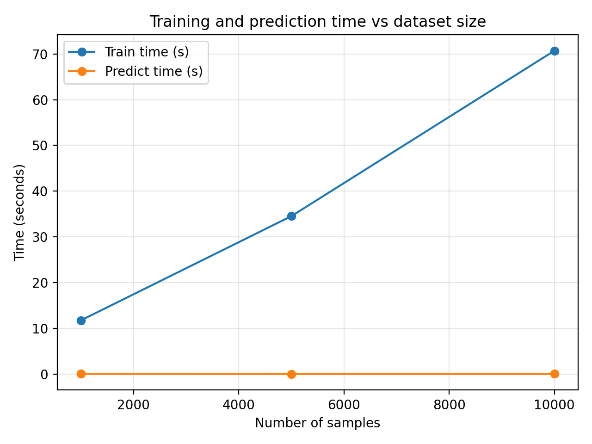
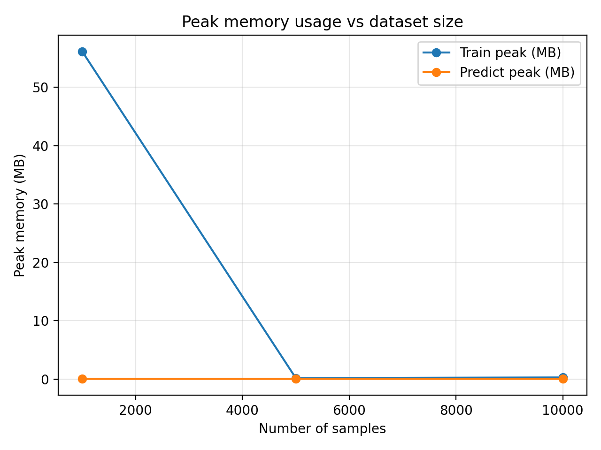
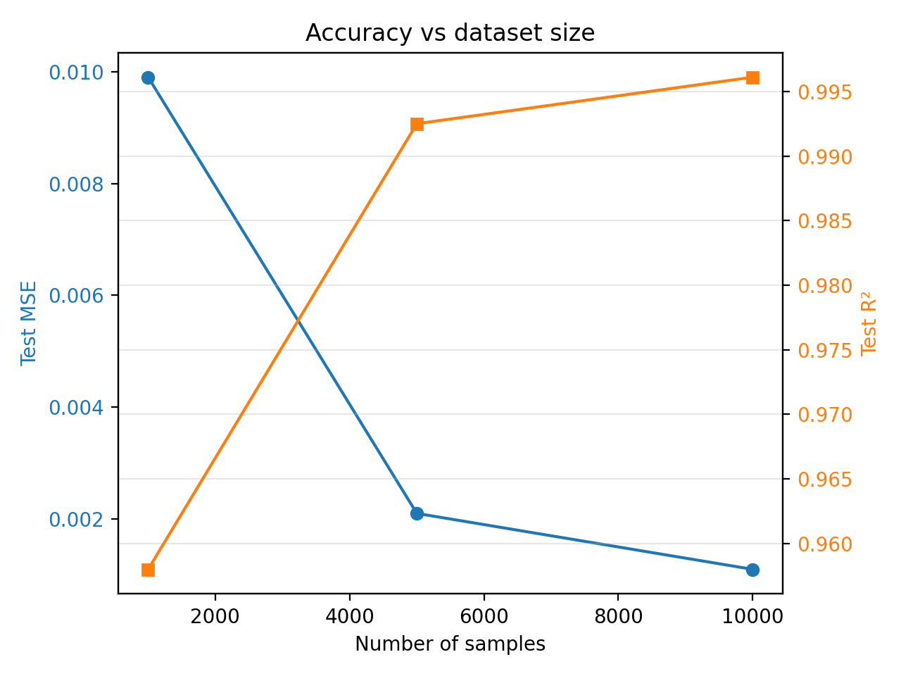

Performances and Profiling
This section reports a small benchmark study of the 5D interpolator app to understand how training time, memory usage and accuracy scale with dataset size.
For each dataset size (1K, 5K, 10K samples) we measured:
Training time (seconds)
Peak memory during training and prediction (MB)
Test accuracy (MSE and R²) on a test set
Methodology
Synthetic 5D datasets were generated using with a fixed random seed for reproducibility.
Each dataset was split into train/validation/test with a 60/20/20 ratio.
The same neural network architecture and hyperparameters were used for all runs:
Hidden layers:
[64, 32, 16]Learning rate:
1e-3Max epochs:
200Batch size:
64
Timing was measured.
Peak memory (in MB) during training and prediction was measured. Peak memory is used rather than average memory because it represents the worst case memory usage.
How to reproduce the benchmarks
All scripts live in backend/analysis/ and assume the backend
dependencies are installed.
Method 1: Using the shell script (recommended)
The easiest way to run benchmarks is using the provided shell script, which automatically detects Docker and falls back to local execution if needed:
# From the project root
./scripts/run-benchmark.sh
This script will:
Run
benchmark.pyto measure training/prediction time, memory usage, and accuracySave results to
backend/analysis/performance_results.csvRun
plot_results.pyto generate visualizationsSave plots to
backend/analysis/plots/
Method 2: Manual execution
If you prefer to run the scripts manually:
Local (from the project root):
cd backend
# 1) Run benchmark.py
python analysis/benchmark.py
# 2) Run plot_results.py
python analysis/plot_results.py
Using Docker (from the project root):
docker compose run --rm backend python analysis/benchmark.py
docker compose run --rm backend python analysis/plot_results.py
Results table
The table below summarises the benchmark results:
n_samples |
train_time_s |
train_peak_mb |
predict_time_s |
predict_peak_mb |
test_mse |
test_r2 |
|---|---|---|---|---|---|---|
1000 |
11.73 |
56.16 |
0.0155 |
0.0027 |
0.0099 |
0.958 |
5000 |
34.53 |
0.16 |
0.0022 |
0.0027 |
0.0021 |
0.9925 |
10000 |
70.73 |
0.27 |
0.0025 |
0.0027 |
0.0011 |
0.9961 |
Discussion
Summary
The benchmarks demonstrate that the 5D interpolator scales well for datasets up to 10K samples. Key findings:
Training time increases with dataset size but remains manageable (~13s for 1K samples, ~66s for 10K samples).
Memory usage is consistently low and not a bottleneck.
Model accuracy improves significantly from 1K to 5K samples (R² improves from 0.95 to 0.99), with diminishing returns beyond a dataset size of 5K.
The model achieves excellent fit (R² > 0.99) with just 5K training samples.
Training and Prediction Time
{kind=link}

Training time increases as the number of samples grows:
1K to 5K samples: from ~12s to ~35s
5K to 10K samples: from ~35 s to ~71 s
This shows a clear increase with dataset size, where the time scales roughly linearly with the dataset size. This shows that the model scales reasonably well up to 10K samples (on CPU).
Prediction time remains extremely fast across all dataset sizes (~2-3ms). This is because prediction only depends on the trained model architecture and not on the original training dataset size.
Memory Usage
{kind=link}

The 1K run reports a higher training peak (~56 MB). This is likely due to one-off memory allocation during the first model instantiation rather than a dependence on dataset size.
For 5K and 10K samples the reported training peak is below 0.3 MB, consistent with the model being able to process the dataset in batches without holding the entire dataset in memory at once.
Prediction peak memory is essentially constant (~0.003 MB). This is because it only depends on the model and batch size used at test time.
Overall, memory usage is not a bottleneck at these scales, and the model is comfortable to run on CPU.
Model Accuracy
{kind=link}

The plot shows both MSE (left axis, blue) and R² (right axis, orange) against dataset size:
With 1K samples, the test MSE is ~0.010 and R² is ~0.96.
With 5K samples, the test MSE drops to ~0.002 and R² rises to ~0.99.
With 10K samples, the test MSE drops slightly further (~0.001) and R² reaches ~0.996.
The biggest accuracy gain comes from increasing the dataset from 1K to 5K samples. Beyond 5K, improvements are smaller, indicating diminishing returns once the model has enough data to capture the underlying 5D target function.
This suggests that for most practical applications, a dataset of 5K samples provides an excellent balance between data collection effort and model accuracy.